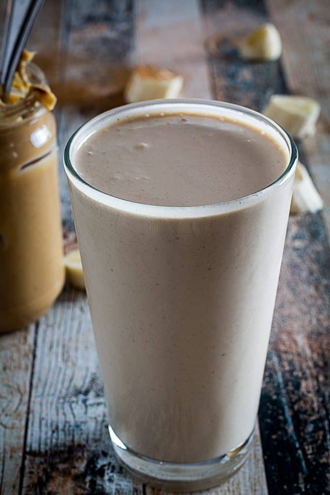

Gainer Protein Shake

Description
A simple blended protein shake for the gainz.
Ingredients
- 1 scoop of Protein Powder
- Half a Banana (ideally frozen)
- 8 oz Whole Milk
- 1/4 cup Quick Oats
- 2 Tbsp Greek Yogurt
- 2 Tbsp Peanut Butter
Steps
- Start by slicing the cucumber in half the long way (hot dog bun slice).
- Scoop the seeds from the cucumbers out using a spoon.
- Slice the cucumber in diagonals to get thin .5 cm thick slices.
- Next dehydrate the cucumbers by placing them in a bowl and adding the 80g of salt. Toss the cucumbers around,
then let it sit for at least 30 minutes.
- After 30 minutes of dehydration, wash the cucumber slices and squeeze them dry with paper towels to
remove all the excess water.
- Put the sugar into a pot and place on medium heat to start caramelizing until it becomes light brown.
Remove the pot from the heat and carefully add in the water and fish sauce.
- Bring the pot to a boil for 5 minutes. Then remove and let it cool down
- Slice the garlic and chili peppers (optional).
- Once the caramelize sauce has cooled, place it in a mason jar or any glass jar and add in
the cucumbers, garlic, and chili peppers. Stir the mixture gently, refrigerate and
enjoy anytime forever...!